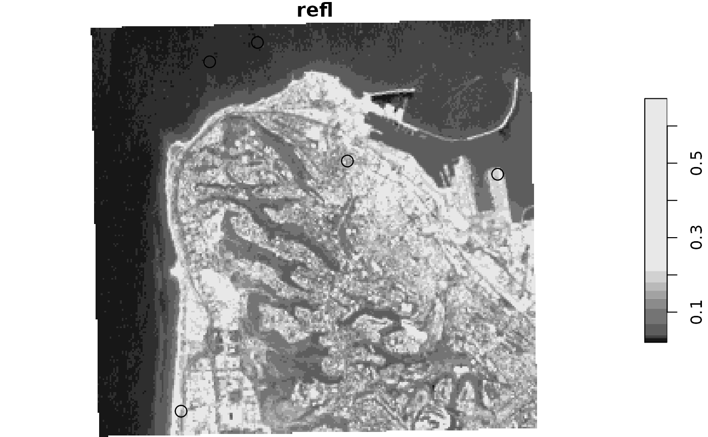

Extract raster values by lines or polygons, summarizing for each feature using a function specified by the user. This function is aimed to reproduce (some of) the functionality of raster::extract.
extract2(x, v, fun, progress = TRUE, ...)
| x | A |
|---|---|
| v | An |
| fun | A function to summarize cell values per feature/band |
| progress | Display progress bar? The default is |
| ... | Further arguments passed to |
A vector (single-band raster) or matrix (multi-band raster) with the extracted and summarized values
# Polygons pol = st_bbox(landsat) pol = st_as_sfc(pol) set.seed(1) pol = st_sample(pol, 5) pol = st_buffer(pol, 100) pol = c(pol, pol) # Plot plot(landsat[,,,1,drop=TRUE], reset = FALSE)# Single-band raster aggregate(landsat[,,,1,drop=TRUE], pol, mean, na.rm = TRUE)[[1]] ## Duplicated areas get 'NA'#> [1] 0.03313243 0.03240556 0.15517222 0.20104000 0.21759063 NA #> [7] NA NA NA NAextract2(landsat[,,,1,drop=TRUE], pol, mean, na.rm = TRUE, progress = FALSE)#> [1] 0.03313243 0.03240556 0.15517222 0.20104000 0.21759063 0.03313243 #> [7] 0.03240556 0.15517222 0.20104000 0.21759063# Multi-band example extract2(landsat, pol, mean, na.rm = TRUE, progress = FALSE)#> [,1] [,2] [,3] #> [1,] 0.03313243 0.05402703 0.06128378 #> [2,] 0.03240556 0.05107500 0.06068611 #> [3,] 0.15517222 0.14351111 0.11841389 #> [4,] 0.20104000 0.17108286 0.14104000 #> [5,] 0.21759063 0.18261563 0.13955938 #> [6,] 0.03313243 0.05402703 0.06128378 #> [7,] 0.03240556 0.05107500 0.06068611 #> [8,] 0.15517222 0.14351111 0.11841389 #> [9,] 0.20104000 0.17108286 0.14104000 #> [10,] 0.21759063 0.18261563 0.13955938# Lines lines = st_cast(pol, "LINESTRING") # Single-band raster extract2(landsat[,,,1,drop=TRUE], lines, mean, na.rm = TRUE, progress = FALSE)#> [1] 0.03325417 0.03225556 0.15913214 0.18650000 0.22911429 0.03325417 #> [7] 0.03225556 0.15913214 0.18650000 0.22911429# Multi-band example extract2(landsat, lines, mean, na.rm = TRUE, progress = FALSE)#> [,1] [,2] [,3] #> [1,] 0.03325417 0.05382917 0.06127917 #> [2,] 0.03225556 0.05079630 0.06030370 #> [3,] 0.15913214 0.14481786 0.11824643 #> [4,] 0.18650000 0.16249600 0.13460000 #> [5,] 0.22911429 0.19283929 0.14493571 #> [6,] 0.03325417 0.05382917 0.06127917 #> [7,] 0.03225556 0.05079630 0.06030370 #> [8,] 0.15913214 0.14481786 0.11824643 #> [9,] 0.18650000 0.16249600 0.13460000 #> [10,] 0.22911429 0.19283929 0.14493571